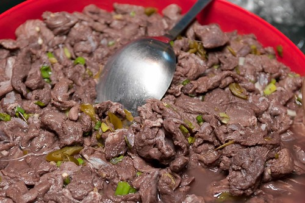

Beef Kelaguen Recipe

Ingredients
- 1 ½ cups lemon juice, or as needed
- 2 tablespoons soy sauce
- Tabasco to taste
- 2 pounds beef flank steak, very thinly sliced against the grain
- 1 bunch green onions, thinly sliced
Directions
- Pour lemon juice, soy sauce, and Tabasco into a large, glass bowl. Stir in beef and green onions. Add additional lemon juice if needed to cover the beef.
- Cover the bowl with plastic wrap, and allow to rest at room temperature for 1 hour, until meat turns a grayish-brown color and appears cooked.
Back to home